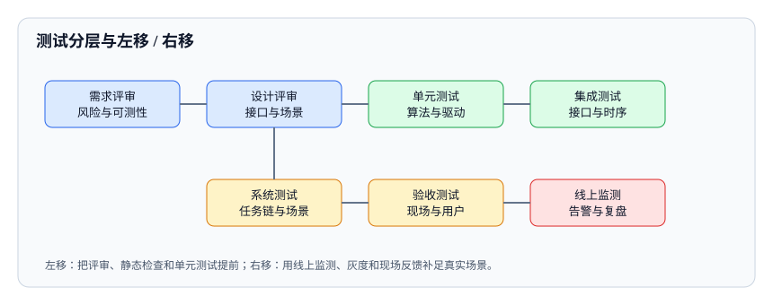

<script type="application/json" id="tb-manifest">
{
  "schema": "tb/1",
  "id": "L-001-006",
  "title": "测试分层、左移与右移",
  "module": "M01",
  "concepts": [
    "test-levels-shift"
  ],
  "target_level": "L3",
  "minutes": 50,
  "objectives": [
    "能划分四层测试并给出每层判据",
    "能判断哪些活动应左移或右移",
    "能识别分层中的重复与空档"
  ],
  "prerequisites": [
    "test-strategy-inputs"
  ],
  "exercises": [
    "EX-006-01",
    "EX-006-02"
  ],
  "resources": [
    "R-29119-2",
    "R-ISTQB"
  ],
  "objective_map": {
    "O1": [
      "EX-006-01"
    ],
    "O2": [
      "EX-006-02"
    ],
    "O3": [
      "EX-006-02"
    ]
  }
}
</script>
<article class="tb-lesson">
  <header>
    <p class="tb-eyebrow">M01 · 测试策略、设计与预言</p>
    <h1>测试分层、左移与右移</h1>
    <p><strong>学完你能：</strong>为导航软件写清单元、集成、系统、验收四层的进入判据、通过判据和负责人，并判断哪些活动该左移、哪些监测该右移。</p>
  </header>
  <section class="tb-retrieval">
    <h2>开课前 3 分钟：先回忆</h2>
    <ol>
      <li>风险分级的三维是什么？</li>
      <li>高风险项应该分配什么测试深度？</li>
    </ol>
    <details>
      <summary>参考答案</summary>
      <p>三维是严重度、暴露和可控性；高风险项通常需要实机长时、故障注入、现场验收和独立复核，不能只靠仿真。</p>
    </details>
  </section>
  <aside>
    <p><strong>本课主读：</strong>R-29119-2《ISO/IEC/IEEE 29119-2:2013 测试过程》。重点看组织级、测试管理级和动态测试级三层过程如何分工。</p>
  </aside>
  <section>
    <h2>一、2,000 条用例为什么还是漏</h2>
    <p>一个常见场景：测试团队维护着 2,000 多条自动化用例，单元测试覆盖率 80%，集成测试每天跑，系统测试也有完整报告。但现场仍然出现“导航到路口突然停车”“充电对接失败后不重试”“急停后底盘还在动”这类问题。团队很困惑：测试做得不少，为什么还是漏？</p>
    <p>问题往往不是“测得不够多”，而是“每一层都在测同样的东西，同时有一些问题没有人负责”。分层的目的不是把用例按目录分开放，而是让不同层级回答不同的问题、用不同的判据、暴露不同类型的缺陷。</p>
  </section>
  <section>
    <h2>二、四层测试各自回答什么</h2>
    <table>
      <thead>
        <tr><th>层级</th><th>回答的问题</th><th>典型对象</th><th>环境</th><th>典型缺陷</th></tr>
      </thead>
      <tbody>
        <tr><td>单元</td><td>这个函数、类或驱动在给定输入下是否正确？</td><td>算法、解析器、控制器、驱动</td><td>纯代码、打桩、无真实硬件</td><td>边界错误、异常未处理、单位错误</td></tr>
        <tr><td>集成</td><td>模块之间的接口、时序和数据是否一致？</td><td>topic、服务、总线、坐标系</td><td>仿真 + 台架 + 部分真实设备</td><td>协议不一致、时间戳错位、坐标系混淆</td></tr>
        <tr><td>系统</td><td>整机在任务链和真实场景下能否完成目标？</td><td>感知到执行的完整链路</td><td>仿真场景 + 实机场地</td><td>长尾场景、降级失效、性能不达标</td></tr>
        <tr><td>验收</td><td>在真实用户、现场和法规条件下能否接受？</td><td>产品 + 用户 + 环境 + 合规</td><td>现场、客户场地、认证实验室</td><td>操作习惯不匹配、环境差异、合规缺口</td></tr>
      </tbody>
    </table>
    <p>四层不是必须按顺序串行，但每一层都要有明确的进入和通过判据。没有判据的分层会退化成“大家都测一点”，最后没人对端到端结果负责。</p>
  </section>
  <figure>
    
    <figcaption>左移把评审、静态检查和单元测试提前；右移用监测、灰度和现场反馈补足真实场景。</figcaption>
  </figure>
  <section>
    <h2>三、每层的进入与通过判据</h2>
    <h3>单元层</h3>
    <ul>
      <li><strong>进入：</strong>代码可编译、依赖可打桩、测试数据可构造。</li>
      <li><strong>通过：</strong>关键分支和边界覆盖、异常路径有断言、失败信息可定位。</li>
      <li><strong>不该做：</strong>在单元测试里启动真实传感器或等待真实网络；那会把单元测试变成慢而脆的集成测试。</li>
    </ul>
    <h3>集成层</h3>
    <ul>
      <li><strong>进入：</strong>各模块单元测试通过、接口契约冻结、联调环境就绪。</li>
      <li><strong>通过：</strong>正常报文、异常报文、超时、重连、版本不匹配都验证；时间戳和坐标系对齐。</li>
      <li><strong>关键：</strong>集成测试要能回答“接口变了会不会坏”，而不是重复单元层的逻辑。</li>
    </ul>
    <h3>系统层</h3>
    <ul>
      <li><strong>进入：</strong>集成通过、场景数据可用、实机或高保真仿真就绪。</li>
      <li><strong>通过：</strong>任务链完成、长尾场景、降级与恢复、性能指标达标。</li>
      <li><strong>关键：</strong>系统测试需要端到端预言，不能只看“没有崩溃”。</li>
    </ul>
    <h3>验收层</h3>
    <ul>
      <li><strong>进入：</strong>系统测试通过、现场条件具备、用户和合规代表参与。</li>
      <li><strong>通过：</strong>真实操作流程、环境差异、法规和合同要求都满足。</li>
      <li><strong>关键：</strong>验收的标准是“用户和监管能否接受”，不是“研发觉得没问题”。</li>
    </ul>
  </section>
  <section>
    <h2>四、左移：把便宜的活动提前</h2>
    <p>缺陷发现得越晚，修复成本越高：需求阶段的歧义，到了现场可能变成整批设备返修；接口单位错误，到了系统测试可能表现为难以定位的漂移。左移不是把所有测试都提前，而是把“反馈快、成本低、能阻止缺陷流入下游”的活动提前。</p>
    <ul>
      <li><strong>需求可测性评审：</strong>每条需求是否有可判定的验收条件？没有的话，先补条件再开发。</li>
      <li><strong>接口契约：</strong>在编码前确定消息格式、单位、坐标系、超时和错误码。</li>
      <li><strong>静态检查：</strong>类型、空值、未使用分支、危险 API、编码规范。</li>
      <li><strong>单元测试与仿真：</strong>让算法在秒级反馈中暴露边界问题。</li>
      <li><strong>设计评审：</strong>降级策略、安全状态、互锁逻辑是否合理。</li>
    </ul>
    <p>一个接口单位错误如果在单元层 5 s 内被发现，修复可能只要几分钟；拖到系统层，可能表现为“路径漂移”，排查要 2 小时甚至更久。左移的收益来自“阻止缺陷进入下一层”，而不是多写文档。</p>
  </section>
  <section>
    <h2>五、右移：承认现场不可完全模拟</h2>
    <p>再好的仿真也无法完全复现真实世界：地面摩擦、光照、人流、网络、用户操作习惯。右移是在发布后继续收集证据，用灰度和监控快速发现、定位和回滚问题。</p>
    <ul>
      <li><strong>灰度发布：</strong>先小范围部署，观察关键指标和异常日志。</li>
      <li><strong>在线监控：</strong>成功率、延迟、急停次数、碰撞告警、恢复时间。</li>
      <li><strong>现场数据回流：</strong>把失败场景录成 bag 或日志，补进场景库和回归集。</li>
      <li><strong>事故复盘：</strong>不仅修问题，还要回答“为什么测试没发现”。</li>
    </ul>
    <p>右移的关键是闭环：现场数据要能回到用例、基线、门禁和设计，而不是只停留在监控大屏。否则“右移”只是把责任推给运维。</p>
  </section>
  <section>
    <h2>六、实例：导航软件的分层</h2>
    <table>
      <thead>
        <tr><th>问题</th><th>层级</th><th>方法</th><th>判据</th></tr>
      </thead>
      <tbody>
        <tr><td>局部规划器在窄通道是否会振荡</td><td>单元</td><td>固定地图 + 构造障碍 + 断言轨迹平滑度</td><td>无来回切换、曲率连续、速度平滑</td></tr>
        <tr><td>规划器与底盘的速度接口单位是否一致</td><td>集成</td><td>契约测试 + 台架</td><td>m/s 与 rad/s 正确、超时处理正确</td></tr>
        <tr><td>人突然横穿时能否安全停车</td><td>系统</td><td>场景法 + 故障注入 + 实机</td><td>停车距离、减速度、恢复时间达标</td></tr>
        <tr><td>真实园区用户是否敢用</td><td>验收</td><td>现场跟车 + 用户访谈</td><td>操作流程可接受、无频繁急停、告警清晰</td></tr>
      </tbody>
    </table>
    <p>如果团队只在系统层测“窄通道”，会很难定位是规划器振荡还是接口单位错误；如果只在单元层测，又无法证明真实场景安全。分层不是重复，而是让每个问题在成本最低的地方被回答。</p>
  </section>
  <section>
    <h2>七、常见误区</h2>
    <ul>
      <li><strong>用覆盖率证明分层做得好。</strong>单元覆盖率 80% 不代表集成和系统层没有空档。</li>
      <li><strong>单元测试依赖真实硬件。</strong>慢、脆、难并行，最后没人愿意跑。</li>
      <li><strong>集成测试做成“大爆炸”。</strong>一次联调所有模块，失败时无法定位。</li>
      <li><strong>系统测试没有预言。</strong>只看“没崩溃”，不判断任务是否完成、指标是否达标。</li>
      <li><strong>左移变成多写文档。</strong>左移要产生可执行的判据，不是增加评审会议。</li>
      <li><strong>右移只有监控没有回流。</strong>数据看了但没进入用例和门禁，问题还会再发生。</li>
    </ul>
  </section>
  <section>
    <h2>八、检查清单</h2>
    <ul>
      <li>四层是否分别有进入和通过判据？</li>
      <li>每层是否在回答不同的问题，而不是重复同一批用例？</li>
      <li>跨模块、降级、配置、升级、现场差异是否有明确归属？</li>
      <li>左移活动是否产生了可执行的判据或自动化测试？</li>
      <li>右移数据是否回流到场景库、基线或门禁？</li>
      <li>每层的失败是否能在更低层快速定位？</li>
    </ul>
  </section>
  <section>
    <h2>九、分层计划模板</h2>
    <table>
      <thead>
        <tr><th>层级</th><th>本层负责的问题</th><th>进入判据</th><th>通过判据</th><th>环境</th><th>负责人</th></tr>
      </thead>
      <tbody>
        <tr><td>单元</td><td>算法、驱动、边界、异常</td><td>可编译、可打桩</td><td>关键分支与边界通过</td><td>纯代码</td><td>研发</td></tr>
        <tr><td>集成</td><td>接口、协议、时序、坐标系</td><td>单测通过、契约冻结</td><td>正常/异常/超时/重连通过</td><td>仿真 + 台架</td><td>集成测试</td></tr>
        <tr><td>系统</td><td>任务链、长尾、降级、性能</td><td>集成通过、场景就绪</td><td>指标达标、降级恢复通过</td><td>仿真 + 实机</td><td>系统测试</td></tr>
        <tr><td>验收</td><td>现场、用户、法规</td><td>系统通过、现场就绪</td><td>用户与合规接受</td><td>客户现场</td><td>产品/质量</td></tr>
      </tbody>
    </table>
    <p>模板填完后，逐列检查三个问题：有没有哪一层没有负责人？有没有哪一层没有通过判据？有没有跨层问题没有归属？这三个问题能发现大部分分层空档。</p>
    <p>模板也不是填完就结束。每次出现现场逃逸缺陷，都要回到这张表问：它本该在哪一层被发现？那一层的判据为什么没拦住？如果是判据缺失，补判据；如果是环境差异，补环境；如果是负责人不清，明确归属。这样分层计划才会随着事故复盘一起进化，而不是一年后还停在最初的样子。</p>
    <p>对机器人项目，建议在表里额外加一列“真实世界差异”：这一层用仿真、台架还是实机，和现场差在哪里。差异越大，越需要在更高层补验证；差异没有被记录，分层就只是实验室里的分层。</p>
    <p>最后一件事是节奏。单元测试应该在每次提交后几分钟内给出反馈，集成测试按天跑，系统测试按版本跑，验收按客户窗口跑。如果单元测试要跑半小时，团队就会开始跳过它；如果系统测试每天跑一次，环境和数据成本会压垮团队。分层计划必须和反馈节奏一起设计。</p>
    <p>如果某一层长期没有发现任何缺陷，不要急着夸它稳定；先确认这一层的用例是否真的有判定力，或者是否只是重复了低层的检查。</p>
  </section>
  <section>
    <h2>十、评审与面试追问</h2>
    <ul>
      <li><strong>问：单元测试覆盖率越高越好吗？</strong>答：不是。覆盖率要配合断言质量和风险覆盖；高覆盖但弱断言没有判定力。</li>
      <li><strong>问：集成测试能不能用真实硬件？</strong>答：可以，但要区分“集成测试”和“系统测试”的目的；真实硬件适合验证接口和时序，不适合重复跑大量逻辑用例。</li>
      <li><strong>问：左移会不会增加前期成本？</strong>答：会增加评审和单元测试投入，但通常能减少后期返工和现场事故；关键是左移活动要产生可执行判据，而不是增加会议。</li>
      <li><strong>问：右移是不是把测试推给运维？</strong>答：不是。右移是测试团队参与监控设计、数据回流和事故复盘，仍然对质量负责。</li>
      <li><strong>问：分层空档怎么发现？</strong>答：看跨模块、降级、配置、升级、现场差异这些“无主”问题；在策略里显式指定归属层和负责人。</li>
    </ul>
  </section>
  <div data-tb-exercise="EX-006-01"></div>
  <div data-tb-exercise="EX-006-02"></div>
  <section>
    <h2>小结</h2>
    <p>分层不是把测试分成四堆，而是让四层各自回答不同的问题：单元层保证逻辑正确，集成层保证接口一致，系统层保证任务链和降级可用，验收层保证现场和合规可接受。左移把便宜的反馈提前，右移把现场证据补回来。判断分层是否有效，不看用例总数，而看每个失败能否在正确的层被快速发现和定位。</p>
  </section>
</article>
